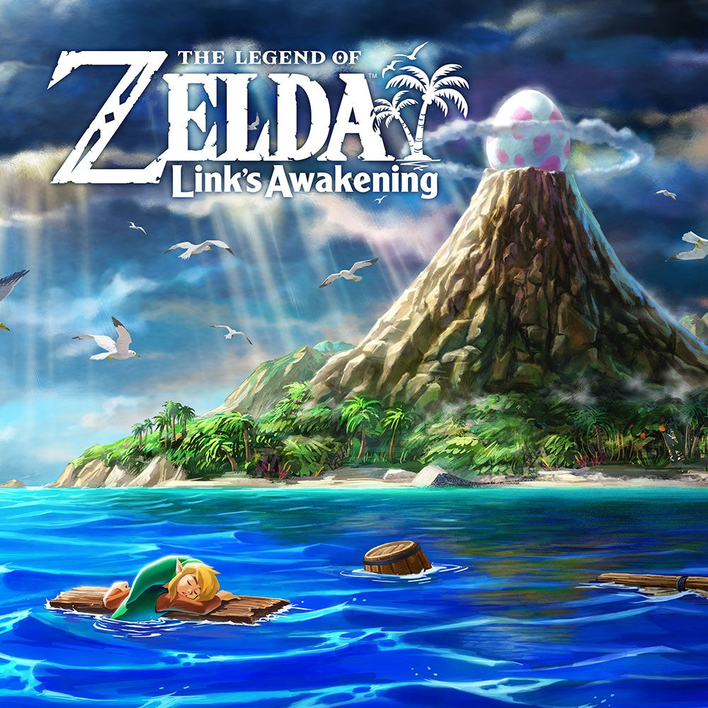
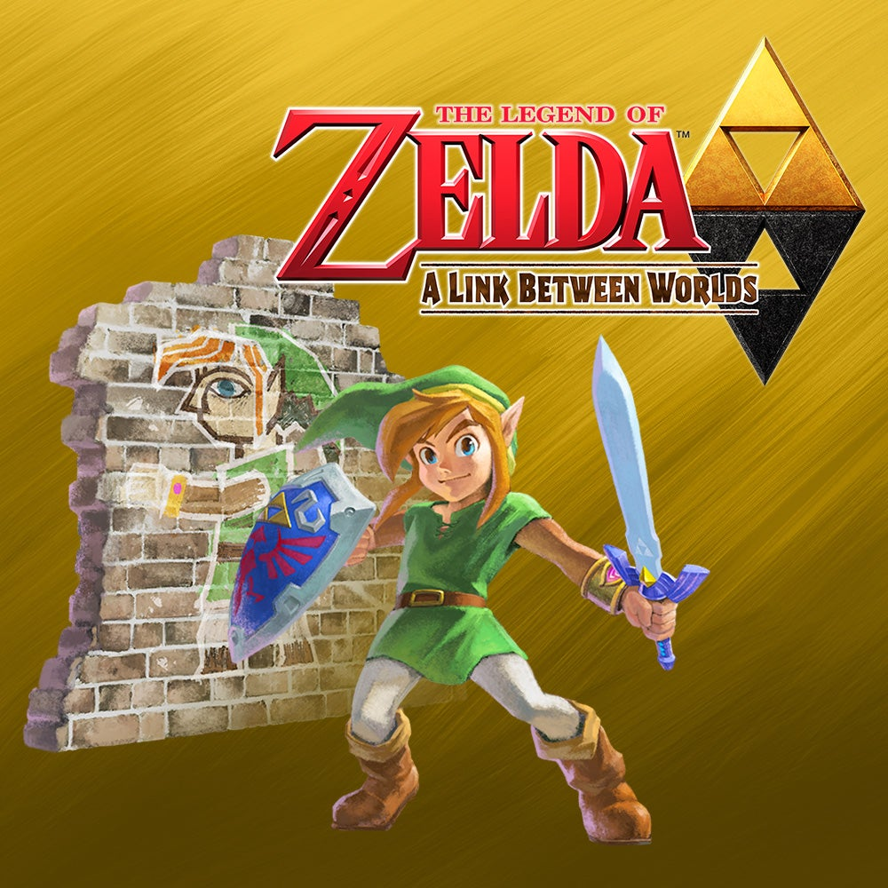
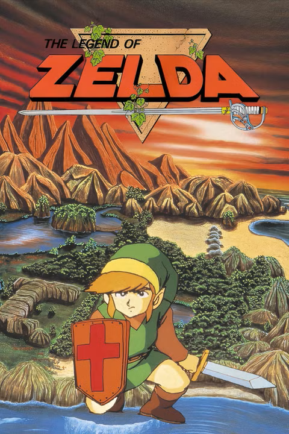
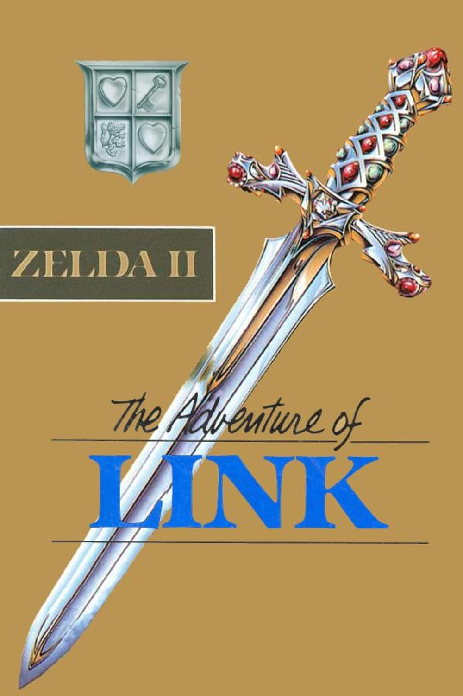

The legend of zelda: A link to the past
Muchos siglos antes de los acontecimientos del juego, en la tierra de Hyrule, muchos partidos procuraron entrar en el mítico Reino Sagrado, donde descansa la omnipotente y omnisciente Trifuerza, una reliquia que tiene el poder de otorgar el mayor deseo de la persona que la tocara y, fue rumoreado que se encontraba allí. Finalmente, el ladrón Ganondorf logró satisfactoriamente tocar la Trifuerza, convirtiendo el Reino Sagrado en una tierra oscura y baldía llamada Mundo Oscuro, además de perder su humanidad transformándose en una bestia conocida como Ganon. Ganon pronto armo un ejército con el que se dispuso a conquistar Hyrule. Con el fin de sellar a Ganon y evitar que causara más destrucción y dolor, el Rey de Hyrule mando a los Siete Sabios sellarlo en el Mundo Oscuro. Los Soldados de Hyrule defendían valientemente a los Sabios de las fuerzas de Ganon, consiguiendo colocar el sello satisfactoriamente. Sin embargo, el número de soldados de Hyrule fue casi completamente borrado como consecuencia de la batalla.
Siglos más tarde, el misterioso hechicero Agahnim ha engañado y ha depuesto al Rey de Hyrule. Agahnim ordena a los soldados de Hyrule capturar a las Siete Doncellas, las descendientes de los Siete Sabios. Cada noche, en una torre del Castillo de Hyrule, las envia al Mundo Oscuro para romper el sello colocado sobre Ganon y su ejército. Zelda, la princesa de Hyrule, es una de las Siete Doncellas y está encarcelada por Agahnim para luego ser usada en este ritual. Con un mensaje de socorro telepático dirigido a un joven llamado Link, y a su tío, pide que la vayan a rescatar de su cautiverio en las mazmorras del Castillo de Hyrule. Link despierta para ver a su tío equipado con su espada y escudo y decide partir a la llamada, no sin antes ordenar a Link que no saliese de la casa bajo ningún concepto. Pero este decide no hacerle caso y dirigirse al castillo para ver qué era lo que pasaba.
Una vez Link consigue adentrarse en el castillo, lo primero con lo que se encuentra es a su tío moribundo, el cual le confía la misión de rescatar a la princesa, dándole su espada y escudo. Link encuentra a la princesa en las mazmorras del sótano, y una vez liberada la lleva por un pasadizo secreto al Santuario, donde el sacerdote le indica que para detener a Agahnim es imprescindible la legendaria Espada Maestra, la única que puede romper la barrera que protege su escondite. Link parte a Kakariko en busca de Sahasrahla para preguntar sobre la espada, pero se da cuenta que ya no está. Al encontrar a Sahasrahla, el anciano le dice a Link que para demostrar que es digno de empuñar la Espada Maestra, debe poseer los colgantes del Poder, la Sabiduría y el Valor: los tres valores que caracterizan a las Diosas (Din, Farore y Nayru, respectivamente). Así, Link parte en la búsqueda de los colgantes, enfrentándose a muchos desafíos y enemigos en las mazmorras, mientras que la princesa esta bajo el cuidado del sacerdote y con la única pista de que uno de los Antiguos Sabios vive en el pueblo Kakariko.

The legend of zelda: Oracle of ages
Link, siendo enviado desde Hyrule a Labrynna por el poder de la Trifuerza, despierta en dicha tierra, encontrándose con Impa, que es asediada por un grupo de Octoroks. Desconocido por Link, Impa había caído en las garras de la malvada hechicera de las sombras Veran.
Esto le permitió engañar a Link para que moviera una barrera sagrada que obstruye su objetivo: poseer al Oráculo de las Edades, Nayru. A la vista de Link, Veran posee a Nayru rápidamente y comienza a utilizar su nuevo poder de control de tiempo, para viajar al pasado y comenzar su plan para traer indecibles desgracias al mundo. Link tras reunirse con ciertos personaje como el Alcalde de Labrynna y el Árbol Maku, aprende que para derrotar a Veran, necesitara las Esencias del Tiempo. Sin embargo, las esencias fueron escondidas a lo largo del tiempo, haciéndolas muy difícil obtenerlas. Consiguiendo el Arpa de los Tiempos en casa de Nayru, Link es capaz de viajar en el tiempo e iniciar la búsqueda de las esencias en Labrynna, al mismo tiempo corrigiendo los daños que Veran había causado a la tierra.
Más de la mitad de su viaje, Link finalmente tiene la oportunidad de rescatar a Nayru de las garras de Veran, en el Palacio de Ambi. Sin embargo, tan pronto como lo hace, Veran posee a la Reina Ambi. Con su nueva autoridad, Veran casi logra capturar a Nayru, pero en el último segundo Nayru utiliza su poder para volver todo a la actualidad.
Recolectando la última de las esencias, Link esta preparado para el enfrentamiento final contra Veran, pero antes de que se pueda ir, Ralph corre delante de él, para que él sea quien mate a la Reina Ambi, aun sabiendo que Ambi es su antecesor, su muerte significaría la suya también. Veran resulta demasiado poderosa para Ralph, dejándolo en lugar de matarlo antes de pasar a la lucha contra Link. Tras liberar a Ambi y la poderosa batalla que siguió, Link fue capaz de derrotar a Veran una vez por todas. Veran se ríe cuando mure, diciendo que su objetivo había sido completado, encendiendo de la Llama del Dolor.
Como Link, Nayru y Ralph regresaron a su propio tiempo, un par misterioso se reía, diciendo que el verdadero mal todavía tenía que llegar. Las hermanas Birova habían estado observando los acontecimientos que ocurrieron, y Veran, a pesar de que ser derrotada, logra crear suficiente miedo y pena para encender la Llama del Dolor. El plan de las Birova es resucitar a Ganon una vez que la Llama del Dolor y la Llama de la Destrucción sean encendidas. Este enfrentamiento final tiene lugar al usar las contraseñas entre Oracle of Ages y Oracle of Seasons para desbloquear otro final.

The legend of zelda: Oracle of seasons
Llamado por la Trifuerza, Link viaja al santuario donde se encuentra la reliquia sagrada. Los triángulos sagrados le transportan a un mundo conocido como Holodrum, que está en extrema necesidad de un héroe.
Link despierta cerca de unas piedras cerca de una zona conocida como Norte Horon. Él escucha una música lejana, y se levanta. Cerca de allí, se encuentra con una compañía itinerante de artistas, que están disfrutando de un espectáculo de danza de Din, una bailarina majestuosa, miembro de la compañía.
Link también se encuentra con una anciana llamada Impa, cocinera de la tropa. Din pide a Link que baile con ella. Sin embargo, de repente, el cielo se oscurece, y el antagonista, el General Onox, aparece. Él revela que Din es en verdad el Oráculo de las Estaciones, descendiente de una línea de oráculos que tienen el poder de cambiar las estaciones de Holodrum. Antes de desaparecer de la escena secuestrando a Din, Onox provoca un tornado enorme que dispersa a Link y los miembros de la compañía. Onox sella a Din dentro de una jaula de cristal, y sume a las estaciones de Holodrum en el caos, arruinando las cosechas y provocando la desesperación y la miseria en todo el país.
Link despierta siendo cuidado por Impa, que le dice acerca de la situación actual. Con el fin de hacer frente a Onox y rescatar a Din, Link debe hablar con el Árbol Maku. Link encuentra el acceso a la arboleda del Árbol Maku bloqueado. Con el fin de demostrar su valía, se adentra en la Cueva del Héroe y consigue la espada de ese lugar, con la que entra en la arboleda del Árbol Maku. Sin embargo, el Árbol Maku ha perdido poder y no recuerda cómo detener a Onox. Se informa a Link que Onox también ha tomado las ocho Esencias de la Naturaleza, elementos misteriosos que contienen la misma esencia de los diversos aspectos de la naturaleza. Si Link recupera estos, el Árbol Maku podrá volver a su verdadero poder y de ahí, él será capaz de producir una Semilla Maku que puede disipar la barrera que impide la entrada al Castillo de Onox.

The legend of zelda: Link's Awakening
Una noche, el héroe Link, recorriendo los mares en busca de una aventura, se encuentra con una fuerte tormenta y naufraga en la Isla Koholint, un paraíso tropical. En la playa de la isla, Link es encontrado inconsciente por una chica joven con el nombre de Marín. Link despierta, confundido, en la casa de Marín y su padre Tarín, que da Link su escudo.
Link vuelve a la playa donde fue encontrado, recuperando su espada perdida, y de repente se acerca un gigantesco búho que le dice que para escapar de la isla tiene que despertar al Pez Viento, la deidad de la Isla Koholint, que está sumida en un sueño profundo dentro de un huevo gigante; para despertarle Link necesita los ocho Instrumentos de las Sirenas, que se encuentran dentro de los ocho mazmorras de la isla. Las pesadillas, seres malvados que tratan de gobernar la isla, hacen todo lo que esté a su alcance para proteger los instrumentos de las sirenas e impedir que Link despierte al Pez Viento. Con la ayuda del búho, Link progresa en la isla, derrota a las pesadillas y recupera los instrumentos.
Al mismo tiempo, Link aparentemente se enamora de la hermosa Marín, quien le enseña la Balada del Pez Viento, una canción de poder misterioso. Sin embargo, la verdadera naturaleza de la isla se revelada cuando Link descubre un mural en un santuario. En él, se inscribe que la isla no es más que un sueño del Pez Viento, y que si él se despierta, la isla desaparecerá. Link, frente a una difícil elección, continúa en su viaje. Las Pesadillas intentan disuadir a Link en su intento de despertar al Pez Viento, diciendo que Marín desaparecerá si el Pez Viento despierta.
Después de recoger todos los ocho instrumentos, Link se acerca al huevo del Pez Viento y toca la Balada del Pez Viento, haciendo que los instrumentos mágicos toquen con él, abriendo una puerta hacia el interior de un laberinto.
Después de atravesar el laberinto en el interior del huevo, Link se encuentra con el líder de las pesadillas, DethI. Este se transforma en muchas formas poderosas, pareciéndose a enemigos con los que Link había luchado antes, pero fue en vano y es finalmente derrotado por Link. Después de su derrota, una escalera aparece y Link es felicitado por el búho, que revela ser "parte del espíritu del Pez Viento". Link vuelve a tocar la Balada del Pez Viento, despertando al Pez Viento. Mientras se lleva a Link lejos, la isla desaparece. La deidad consuela a Link diciéndole que aunque la Isla Koholint desaparezca, permanecerá en la memoria de Link para siempre. Link despierta, flotando en el océano, dudando de si los eventos en Isla Koholint eran un sueño. Cuando mira hacia arriba al cielo, sin embargo, Link ve la silueta masiva del Pez Viento y sonríe. Si el juego se termina sin ninguna muerte, se demuestra que Marín se ha reencarnado en una gaviota, como era su deseo expresado mucho antes en el juego. El paradero de Link después de esto es desconocido.

The legend of zelda: A Link Between Worlds
Los acontecimientos de A Link Between Worlds se llevan a cabo seis generaciones después de los eventos de A Link to the Past. La leyenda de las batallas del legendario héroe contra Ganon se han transmitido de generación en generación, y la paz ha gobernado en Hyrule durante décadas. La encarnación de Link en el juego es un aprendiz del mejor herrero de todo Hyrule.
Acosado por una pesadilla en la que un objeto triangular es destruido y frente a una malvada criatura gigantesca, Link se despierta de su sueño gracias a los gritos de Guri, el hijo del herrero. Link, siguiendo a su amigo, se apresura hacia la fragua, donde el Capitán de la Guardia de Hyrule se ha detenido para recoger su espada y escudo. Después de Link se lleve una reprimenda por llegar tarde, la esposa del herrero se da cuenta de que el capitán se ha olvidado de coger su espada al irse de la fragua. Por ello, se le da a Link la tarea de ir al Castillo de Hyrule para devolverla a su legítimo propietario. Una vez que Link llega al castillo se le dice que el capitán no se encuentra allí y en su lugar se ha dirigido al Santuario. Al llegar allí, sin embargo, el villano Yuga aparece, y vuelve tanto a Zeres como al capitán en pinturas con su malvada magia.
Link entra al Santuario y se abalanza sobre Yuga, pero el malvado hechicero es capaz de utilizar su magia para transformarse en una pintura en la pared, causando que Link se estrelle directamente contra la pared. Yuga luego vuelve a su forma original, dando unas patadas a Link y burlándose de él. Yuga se marcha con el retrato de Zeres, mientras el sacerdote amenaza con que advertirá a la Princesa Zelda de esto, antes de que Link se desmaye.
Link despierta una vez más en su casa, donde se encuentra cara a cara con una figura enmascarada vestida de púrpura, que se presenta como Ravio, un comerciante ambulante. Encontró a Link inconsciente en el Santuario y lo trajo de vuelta a una casa vacía, que sin saberlo Ravio lo había llevado a su propia vivienda. Después de que Link explica la situación a Ravio, el misterioso vendedor pide a Link que alquile su casa, consiguiendo la respuesta positiva del joven. Como agradecimiento, Ravio le da un extraño brazalete, al parecer una reliquia de Ravio.

The legend of zelda
La trama se basa en gran medida en la historia que figura en el corto prólogo y el manual de instrucciones. Hyrule se vio envuelto en el caos después de que un ejército dirigido por Ganon, el Príncipe de las Tinieblas, invadiera el reino y se consiguiera la Trifuerza del Poder, un mágico artefacto que otorgaba una gran fuerza. La Princesa Zelda dividió un artefacto semejante, la Trifuerza de la Sabiduría, en ocho fragmentos, ocultándolos en las mazmorras secretas en todo el país para evitar que cayeran en manos de Ganon. Ella mandó a su niñera de confianza, Impa, a un viaje para encontrar un hombre lo suficientemente valiente como para destruir a Ganon. Al oír esto, Ganon se enfadó, encarcelado a la princesa, y envió a sus esbirros en busca de Impa.
Según el manual, Impa huyó para salvar su vida, pero fue alcanzada por sus perseguidores. Cuando los secuaces de Ganon la rodearon, un joven apareció derrotando a los monstruos. El nombre del joven era Link, e Impa le contó la difícil situación de Hyrule. Link decidió ayudar, y para salvar a Zelda, debería luchar contra Ganon, antes reuniendo los fragmentos esparcidos de la Trifuerza de la Sabiduría. Link se dirigió a Hyrule, hacia una aventura épica.
Durante el transcurso del juego, Link localiza las ocho mazmorras y recupera los fragmentos de la Trifuerza de la Sabiduría de las garras de poderosos monstruos. A lo largo del camino, obtiene una gran variedad de objetos útiles y mejoras que le ayudan en su búsqueda. Con la Trifuerza de la Sabiduría, Link es capaz de infiltrarse en la fortaleza de Ganon en la Montaña de la Muerte. Él se enfrenta al Príncipe de las Tinieblas, destruyéndolo con una Flecha de Plata en las profundidades de su propia guarida. Link recoge la Trifuerza del Poder de las cenizas de Ganon y da ambos fragmentos de la Trifuerza a la princesa Zelda, quien es liberada de su cautiverio. De acuerdo a las palabras de Zelda, la paz regresaría a Hyrule.
Un "símbolo de valentía, poder y sabiduría", Link fue diseñado por Shigeru Miyamoto como un joven por encima de la mayoría de edad para que los jugadores se identificaran con él; el protagonista silencioso comienza el juego como un chico normal, pero crece en fuerza y fortaleza para triunfar sobre el mal.
El nombre de la princesa fue inspirado por Zelda Fitzgerald. Miyamoto explicó: "Zelda era el nombre de la esposa del famoso novelista F. Scott Fitzgerald. Era una mujer famosa y bella, y me gustó el sonido de su nombre. Así que me tomé la libertad de usar su nombre para el primer título de Zelda".

Zelda 2: The Adventure of link
Varios años después de la historia de The Legend of Zelda, justamente en el cumpleaños número 16 de Link, éste notó algo raro en su mano izquerda. Tenía una marca similar a un mapa de Hyrule. Link busca a Impa, para que le explique lo que significa esta marca. Impa le dice que vaya al Castillo del Norte, donde una doncella llamada Zelda está sumida en un profundo sueño. Ella, según Impa, dio inicio a la "Leyenda de Zelda", la cuál dice que hace mucho tiempo, el Príncipe de Hyrule quería saber la ubicación exacta de la Trifuerza, pero Zelda se negó a decirle su ubicación. Con el fin de obtener información, el príncipe trajo a un mago para interrogarla. Al no poder obtener nada, el mago la hechizó sumiéndola en un sueño eterno. El príncipe, sintiéndose muy culpable de este hecho, la llevó hasta la torre del Castillo del Norte, con la esperanza de que algún día despertara. Además, el príncipe decretó que toda niña que naciera en la Familia Real de Hyrule llevaría el nombre de Zelda, para recordarla.
Impa le dice a Link que la marca de la mano significa que él es el héroe elegido para despertar a Zelda. Impa da a Link un cofre que contiene seis cristales y escritos antiguos que indican que cada cristal debe ser colocado en una mazmorra diferente de Hyrule. Esto abrirá el camino hacia el Gran Palacio, donde se encuentra la Trifuerza del Valor, que tiene el poder suficiente como para despertar a Zelda. Con los cristales en su mano, Link se dispone a colocarlos en sus respectivos palacios. Mientras tanto, los seguidores de Ganon están tratando de matar a Link, para rociar su sangre en las cenizas de Ganon, lo que podría resucitar a su amo.
En última instancia, Link coloca los cristales en los seis palacios, y con los cristales en su lugar, la entrada del Gran Palacio se abre. Después de aventurarse en lo más profundo, Link libra una lucha contra Link Oscuro y lo derrota. Después de esto, Link consigue la Trifuerza del Valor, y con ella despierta a Zelda.